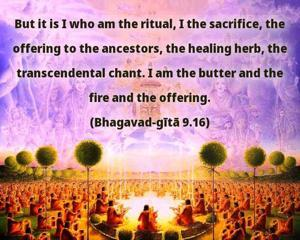
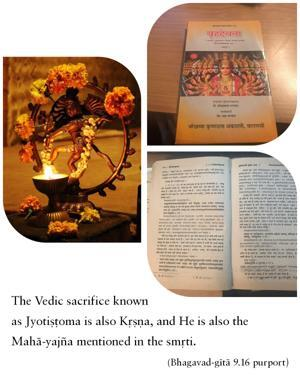
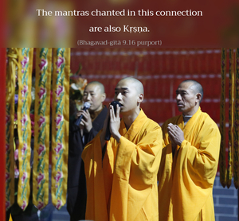
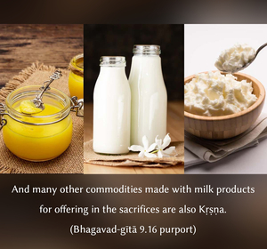

But it is I who am the ritual, I the sacrifice, the offering to the ancestors, the healing herb, the transcendental chant. I am the butter and the fire and the offering.




The Vedic sacrifice known as Jyotiṣṭoma is also Kṛṣṇa, and He is also the Mahā-yajña mentioned in the smṛti. The oblations offered to the Pitṛloka or the sacrifice performed to please the Pitṛloka, considered as a kind of drug in the form of clarified butter, is also Kṛṣṇa. The mantras chanted in this connection are also Kṛṣṇa. And many other commodities made with milk products for offering in the sacrifices are also Kṛṣṇa. The fire is also Kṛṣṇa because fire is one of the five material elements and is therefore claimed as the separated energy of Kṛṣṇa. In other words, the Vedic sacrifices recommended in the karma-kāṇḍa division of the Vedas are in total also Kṛṣṇa. Or, in other words, those who are engaged in rendering devotional service unto Kṛṣṇa are to be understood to have performed all the sacrifices recommended in the Vedas.